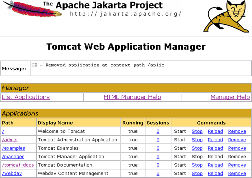
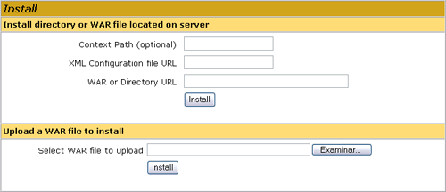
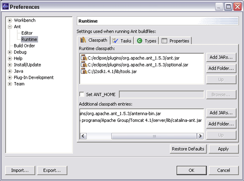

Desarrollo y configuración de aplicaciones web
Desarrollo de aplicaciones web
Construcción de la aplicación
Cuando iniciamos el servidor web, automáticamente carga en el CLASSPATH del servidor lo necesario para trabajar con servlets y páginas JSP, y también carga las clases que haya en los directorios WEB-INF/classes y WEB-INF/lib de las aplicaciones, para que sepan dónde encontrarlas.
Sin embargo, para poder construir una aplicación (implementar y compilar los servlets y páginas JSP que la componen), necesitaremos también tener estos datos configurados, pues de lo contrario no conseguiremos compilar. Veremos ahora qué pasos hay que seguir para esto.
Directorio de trabajo
Primero debemos crear un directorio de trabajo donde colocar nuestras aplicaciones Web. Es recomendable que dicho directorio quede fuera del directorio de instalación del servidor.
Para que la aplicación esté disponible tendremos que instalarla dentro del servidor de aplicaciones, por lo que tendremos que copiar la aplicación de nuestro directorio de desarrollo al directorio del servidor web. Este proceso es lo que se conoce como despliegue, y lo estudiaremos con mayor detalle más adelante.
Podemos estructurar el directorio de desarrollo de la siguiente forma:
- src: Código fuente (servlets y otras clases)
- web (o WebContent): Elementos que no necesitan ser compilados (recursos estáticos, JSPs, WEB-INF/web.xml, librerías)
- build: Aplicación completa tal como se instalará en el servidor
- dist: Aplicación empaquetada (fichero WAR)
De esta forma separamos las clases Java de nuestra aplicación, que deben ser compiladas antes de desplegar la aplicación, del resto de elementos de la aplicación.
Establecer el CLASSPATH
Tenemos que añadir al CLASSPATH el lugar donde se encuentran las APIs de servlets y JSP. Cada servidor proporciona mediante unos ficheros JAR estas librerías, que deberemos añadir. En el caso de Tomcat, tenemos los ficheros servlet-api.jar para poder compilar nuestros servlets. Las páginas requieren otras librerías, como jsp-api.jar. Todos estos ficheros se encuentran localizados en el directorio common/lib. Normalmente sólo necesitamos añadir el fichero servlet-api.jar, puesto que las páginas JSP las compila automáticamente el servidor si no lo están, y él ya encuentra solo los JAR.
También deberemos añadir los directorios y ficheros JAR de otras clases que necesitemos y no formen parte de la API de Java (incluyendo librerías del directorio WEB-INF/classes o WEB-INF/lib de la aplicación).
La herramienta ant nos facilitará esta tarea, ya que podremos introducir en el classpath todas las librerías que incluye Tomcat de forma sencilla. Podemos incluir la librerías necesarias como se muestra a continuación:
<path id="compile.classpath">
<pathelement location="${catalina.home}/common/classes"/>
<fileset dir="${catalina.home}/common/endorsed">
<include name="*.jar"/>
</fileset>
<fileset dir="${catalina.home}/common/lib">
<include name="*.jar"/>
</fileset>
<pathelement location="${catalina.home}/shared/classes"/>
<fileset dir="${catalina.home}/shared/lib">
<include name="*.jar"/>
</fileset>
</path>
Donde ${catalina.home} será la ruta donde tengamos instalado Tomcat.
Construcción de la aplicación
Deberemos escribir todo el código fuente de las clases Java de nuestra aplicación en el subdirectorio src del directorio de desarrollo, y generar el resto de recursos en el subdirectorio web (siempre será necesario tener al menos el descriptor de despliegue /WEB-INF/web.xml para que la aplicación funcione).
Una vez hemos desarrollado los componentes de nuestra aplicación, deberemos construir la aplicación. Construiremos la aplicación final en el subdirectorio build, según la organización descrita anteriormente.
Una vez construida, podemos empaquetarla de forma opcional en un fichero WAR para facilitar su distribución. Este fichero WAR lo generaremos dentro del directorio dist.
Para construir la aplicación seguiremos los siguientes pasos:
1. Preparación
En esta fase deberemos construir en el directorio build la estructura básica de la aplicación web. Crearemos los directorios /WEB-INF, /WEB-INF/lib y /WEB-INF/classes y copiaremos todo el contenido que no necesita ser compilado (directorio web) a este directorio build.
Podemos utilizar ant para realizar esta tarea. Podemos hacerlo como se muestra a continuación:
<target name="prepare">
<mkdir dir="${build.home}"/>
<mkdir dir="${build.home}/WEB-INF"/>
<mkdir dir="${build.home}/WEB-INF/classes"/>
<mkdir dir="${build.home}/WEB-INF/lib"/>
<copy todir="${build.home}">
<fileset dir="${web.home}"/>
</copy>
</target>
2. Compilación
Hasta ahora tenemos en build todo el contenido de la aplicación web que no necesita ser compilado, y la estructura de directorios de /WEB-INF creada.
Ahora ya podemos compilar todas las clases Java que hayamos desarrollado en src. El código compilado resultante lo guardaremos en el directorio /WEB-INF/classes dentro de build, que es donde se deben ubicar estas clases Java. Para la compilación deberemos tener establecido el classpath con todas las librerías necesarias, tal como hemos visto en el punto anterior.
Utilizando ant podemos realizar esta compilación de la siguiente forma:
<target name="compile" depends="prepare"
description="Compila los fuentes Java">
<javac srcdir="${src.home}"
destdir="${build.home}/WEB-INF/classes"
debug="${compile.debug}"
deprecation="${compile.deprecation}"
optimize="${compile.optimize}">
<classpath refid="compile.classpath"/>
</javac>
</target>
3. Empaquetamiento
Por último, y de forma opcional, podemos empaquetar la aplicación en un fichero WAR para facilitar su distribución. En algún caso este paso puede ser obligatorio, ya que para desplegar las aplicaciones algunos servidores de aplicaciones nos fuerzan a utilizar un fichero WAR.
Deberemos utilizar la herramienta JAR para empaquetar todo el contenido del directorio build en un fichero con extensión WAR. Este fichero lo guardaremos en el directorio dist.
Podemos hacer esto con ant de la siguiente forma:
<target name="dist" depends="compile"
description="Crea el fichero WAR de la aplicacion">
<mkdir dir="${dist.home}"/>
<jar jarfile="${dist.home}/${war.name}" basedir="${build.home}"/>
</target>
Despliegue de la aplicación
Una vez hemos construido la aplicación deberemos desplegarla en el servidor de aplicaciones para que dicha aplicación esté disponible al acceder al servidor desde la web. Este proceso es conocido como despliegue o deployment. Cada servidor de aplicaciones tiene sus propios métodos para desplegar las aplicaciones. Por ejemplo, casi siempre tenemos disponible una interfaz web a través de la cual podemos subir y desplegar una aplicación en el servidor.
Vamos a ver las posibles formas en las que el servidor web Tomcat nos permite desplegar las aplicaciones, pero antes veremos dónde se almacenan las aplicaciones desplegadas en Tomcat.
Tomcat tiene un directorio webapps (${tomcat.home}/webapps) donde están todas las aplicaciones web instaladas en el servidor. Cada aplicación web está contenida dentro de un subdirectorio de webapps, y este subdirectorio contendrá toda la estructura de directorios y ficheros correspondiente a la aplicación web. Por ejemplo, podremos tener:
${tomcat.home}/webapps/aplic/
${tomcat.home}/webapps/aplic/index.htm
${tomcat.home}/webapps/aplic/WEB-INF/
${tomcat.home}/webapps/aplic/WEB-INF/web.xml
${tomcat.home}/webapps/aplic/WEB-INF/classes/
${tomcat.home}/webapps/aplic/WEB-INF/lib/
De esta forma tendremos un contexto (aplicación web) aplic instalado en Tomcat. Por defecto Tomcat asigna como ruta de cada contexto el mismo nombre del directorio del mismo, por lo que para acceder a esta aplicación aplic anterior deberemos introducir la siguiente URL:
http://localhost:8080/aplic/index.htm
Considerando que tenemos Tomcat instalado en nuestra máquina local y atendiendo en el puerto 8080 (es el puerto por defecto de Tomcat).
Más adelante veremos cómo podemos configurar Tomcat para asignar a cada contexto la ruta que queramos. Al instalar Tomcat encontramos una aplicación instalada por defecto en un directorio ROOT (${tomcat.home}/webapps/ROOT). Esta aplicación tiene asignada la ruta /, por lo que cuando accedamos a la URL:
http://localhost:8080/
Será esta la aplicación a la que se estará accediendo, que nos muestra la página de bienvenida de Tomcat y enlaces a documentación y a la aplicación de gestión del servidor.
Si copiamos recursos a este directorio ROOT, podremos acceder a ellos a partir de esta URL raíz del servidor. Por ejemplo, si copiamos la siguiente página HTML:
${tomcat.home}/webapps/ROOT/pagina.htm
Podremos acceder a ella utilizando la siguiente URL:
http://localhost:8080/pagina.htm
También podremos configurar Tomcat para que sea cualquier otra de las aplicaciones instaladas la que tenga asignada esta ruta raíz, simplemente cambiando la ruta asignada a cada contexto como se verá más adelante.
Una vez hemos visto cómo se almacenan las aplicaciones desplegadas en Tomcat, vamos a ver cómo desplegarlas. Una forma sencilla de hacerlo es simplemente crear el directorio de la aplicación en webapps y copiar ahí todo su contenido. Esto a veces nos fuerza a reiniciar el servidor para que la nueva aplicación sea reconocida correctamente por Tomcat. Por esta razón, existen otras formas de despliegue de forma dinámica, sin necesidad de reiniciar Tomcat, a través de una aplicación instalada en Tomcat llamada manager. Tendremos disponible tanto una versión HTML del manager, con la que podremos desplegar aplicaciones desde un navegador, como una versión basada en comandos que será utilizada por una serie de tareas de ant con las que podremos realizar el despliegue.
A continuación veremos con detalle cada una de estas formas de despliegue.
1. Copiar al directorio de aplicaciones
Esta forma de despliegue es la más sencilla. Simplemente copiamos el contenido de nuestra aplicación, que habremos generado en el directorio build de nuestro directorio de desarrollo, al directorio webapps de Tomcat. Esta copia la podemos hacer utilizando tareas de ant como se muestra a continuación:
<target name="deploy" depends="compile"
description="Despliega la aplicacion">
<mkdir dir="${catalina.home}/${app.name}"/>
<copy todir="${catalina.home}/${app.name}">
<fileset dir="${build.home}"/>
</copy>
</target>
También podremos copiar directamente el fichero WAR con la aplicación al directorio webapps de Tomcat. En este caso, cuando reiniciemos Tomcat, éste desempaquetará el fichero WAR creando la estructura de directorios de la aplicación bajo webapps. Esto es el comportamiento por defecto, pero podremos configurar Tomcat para que no desempaquete los WAR, sino que acceda a la aplicación usando directamente el fichero WAR como veremos más adelante.
Este método tiene el inconveniente de que deberemos reiniciar el servidor para que Tomcat reconozca las nuevas aplicaciones que hayamos instalado. En las última versiones de Tomcat se suelen reconocer correctamente las aplicaciones que se instalan en tiempo de ejecución, sin necesidad de reiniciar el servidor, pero en algunos casos será necesario reiniciarlo para asegurarnos de que ha actualizado correctamente la información sobre las aplicaciones instaladas.
Para evitar tener que reiniciar el servidor, tenemos una aplicación instalada en Tomcat llamada manager, que nos permitirá desplegar y gestionar las aplicaciones web instaladas en el servidor en tiempo de ejecución. Con el manager podremos subir y desplegar una aplicación, ver la lista de aplicaciones desplegadas, y detener, recargar, reanudar o desinstalar estas aplicaciones.
2. Utilizar la interfaz HTML del manager
El manager de Tomcat cuenta con una interfaz HTML desde la cual podremos desplegar aplicaciones y gestionar las aplicaciones instaladas. Para acceder a esta interfaz HTML del manager introduciremos la siguiente URL en cualquier navegador:
http://localhost:8080/manager/html
Para poder acceder al manager necesitaremos contar con un usuario con rol manager registrado en Tomcat. Si no tenemos ningún usuario con estos permisos deberemos crear uno. Para ello editaremos el fichero ${tomcat.home}/conf/tomcat-users.xml e introduciremos las siguientes líneas:
<role rolename="manager"/> <user username="admin" password="j2ee" roles="manager"/>
Con esto ya podremos acceder al manager con nuestro usuario. En este caso el usuario tendrá el nombre admin y el password j2ee.
Una vez accedamos al manager veremos una página como la que se muestra a continuación:

Aquí podemos ver las aplicaciones instaladas en el servidor y podemos gestionarlas. Podemos detener (Stop) las aplicaciones para que dejen de estar disponibles, pero sin borrarlas del servidor, y posteriormente reanudar su ejecución con Start. También podemos recargar las aplicaciones con Reload. Esto será útil cuando hayamos modificado la aplicación y queramos que Tomcat reconozca estos cambios, por ejemplo si hemos cambiado la configuración de la aplicación (web.xml) o hemos añadido o modificado clases Java. Por último, con Remove podremos desinstalar la aplicación del servidor. Al hacer esto se eliminarán todos los ficheros de la aplicación y ya no podrá reanudarse.
En la parte inferior de esta página encontramos los siguientes formularios:

Desde aquí podremos desplegar aplicaciones web en el servidor. Con el formulario superior podremos desplegar una aplicación que ya se encuentre en un directorio de la máquina en la que está el servidor.
Con el formulario inferior será muy sencillo desplegar una aplicación web. Simplemente necesitamos tener el fichero WAR de la aplicación en nuestra máquina. Pulsamos sobre Examinar... para buscar y seleccionar este fichero WAR, y una vez seleccionado pulsaremos sobre Install para que suba y despliegue la aplicación al servidor web.
3. Utilizar tareas de ant
Además de la interfaz HTML, el manager de Tomcat cuenta con una interfaz en forma de servicio, con la que podremos utilizar la funciones del manager enviando comandos en la misma URL.
Tomcat proporciona una serie de tareas adicionales de ant que utilizan estos servicios del manager para realizar las tareas de despliegue y gestión de la aplicaciones web. De esta forma podremos desplegar aplicaciones directamente utilizando tareas de ant. Esta librería de tareas de ant está contenida en el fichero catalina-ant.jar ubicado en:
${tomcat.home}/server/lib/catalina-ant.jar
Por lo tanto, para poder utilizar estas tareas de ant necesitaremos tener este fichero en el classpath. Si estamos utilizando la versión de ant incluida en Eclipse deberemos configurarlo para que incluya esta librería al ejecutar ant. Para ello nos vamos a Window > Preferences e introducimos este fichero en el classpath de ant:

Una vez tenemos esta librería de tareas en el classpath, deberemos declarar estas tareas dentro de nuestro fichero build.xml para poder utilizarlas. Las tareas disponibles son:
<taskdef name="deploy"
classname="org.apache.catalina.ant.DeployTask"/>
<taskdef name="install"
classname="org.apache.catalina.ant.InstallTask"/>
<taskdef name="list"
classname="org.apache.catalina.ant.ListTask"/>
<taskdef name="reload"
classname="org.apache.catalina.ant.ReloadTask"/>
<taskdef name="remove"
classname="org.apache.catalina.ant.RemoveTask"/>
<taskdef name="resources"
classname="org.apache.catalina.ant.ResourcesTask"/>
<taskdef name="roles"
classname="org.apache.catalina.ant.RolesTask"/>
<taskdef name="start"
classname="org.apache.catalina.ant.StartTask"/>
<taskdef name="stop"
classname="org.apache.catalina.ant.StopTask"/>
<taskdef name="undeploy"
classname="org.apache.catalina.ant.UndeployTask"/>
Vamos a ver ahora como utilizar las tareas principales de Tomcat.
Despliegue
Para desplegar una aplicación podemos utilizar la tarea deploy como se muestra a continuación:
<target name="deploy" depends="dist" description="Despliega la aplicacion">
<deploy url="${manager.url}"
username="${manager.nombre}"
password="${manager.passwd}"
path="${app.path}"
war="file:${dist.home}/${war.name}"/>
</target>
Donde ${manager.url} es la dirección en la que se encuentra el manager de Tomcat. Normalmente esta URL será la siguiente:
http://localhost:8080/manager
Si tenemos el servidor en nuestra máquina local en el puerto 8080. Para poder acceder a este manager debemos indicar también el nombre y el password de algún usuario con el rol manager, ya que no se debe permitir que cualquier usuario pueda desplegar y modificar las aplicaciones del servidor. Si no contamos con este usuario deberemos crearlo como vimos en el punto anterior.
Sobre la aplicación que vamos a desplegar, deberemos indicar la ruta que le vamos a asignar al contexto (path) y que la identificará dentro del servidor, y además deberemos proporcionar en war el fichero WAR que contiene la aplicación web que vamos a desplegar.
Eliminar la aplicación
Podemos eliminar de forma permanente una aplicación instalada con la tarea undeploy. Con esta tarea se borrarán del servidor todos los ficheros de la aplicación.
<target name="undeploy" description="Desinstala la aplicacion">
<undeploy url="${manager.url}"
username="${manager.nombre}"
password="${manager.passwd}"
path="${app.path}"/>
</target>
En este caso, al igual que con la tarea anterior, debemos proporcionar la URL del manager y el nombre y el password de un usuario administrador que pueda gestionar las aplicaciones del servidor.
Además tendremos que indicar la ruta de la aplicación que queremos eliminar. Esta ruta, como hemos visto anteriormente, será la que identifique cada aplicación, y por lo tanto deberemos proporcionarla siempre que queramos realizar alguna operación con cualquiera de las aplicaciones, para indicar a qué aplicación nos referimos.
Lista de aplicaciones
Podemos obtener una lista de todas las aplicaciones instaladas en el servidor utilizando la tarea list.
<target name="list" description="Lista las aplicaciones instaladas">
<list url="${manager.url}"
username="${manager.nombre}"
password="${manager.passwd}"/>
</target>
Esta tarea mostrará una lista de todas las aplicaciones y el estado de las mismas, además de la ruta donde están instaladas en el servidor.
Detener, reanudar y recargar
Si queremos que una aplicación deje de estar disponible al acceder al servidor desde la web, pero no queremos eliminarla, podemos detenerla utilizando la tarea stop:
<target name="stop" description="Detiene la aplicacion">
<stop url="${manager.url}"
username="${manager.nombre}"
password="${manager.passwd}"
path="${app.path}"/>
</target>
Posteriormente podremos volver a reanudar su ejecución para que la aplicación vuelva a estar disponible con start:
<target name="start" description="Reanuda la aplicacion">
<start url="${manager.url}"
username="${manager.nombre}"
password="${manager.passwd}"
path="${app.path}"/>
</target>
Cuando hayamos hecho cambios en la aplicación, es posible que nos interese que Tomcat recargue la aplicación para que se reflejen los cambios realizados. Podremos recargar una aplicación con la tarea reload:
<target name="reload" description="Recarga la aplicacion">
<reload url="${manager.url}"
username="${manager.nombre}"
password="${manager.passwd}"
path="${app.path}"/>
</target>
Instalación temporal
En lugar de desplegar una aplicación, podemos instalarla de forma temporal. La diferencia es que si realizamos una instalación temporal, la aplicación estará disponible en el servidor tras instalarla, como si hubiese sido desplegada, pero la próxima vez que se inicie el servidor esta aplicación ya no estará.
Para realizar esta instalación temporal podemos utilizar la tarea install:
<target name="install" depends="dist" description="Instala la aplicacion">
<install url="${manager.url}"
username="${manager.nombre}"
password="${manager.passwd}"
path="${app.path}"
war="file:${dist.home}/${war.name}"/>
</target>
Para eliminar las aplicaciones instaladas de forma temporal, utilizaremos la tarea remove:
<target name="remove" description="Desinstala la aplicacion">
<remove url="${manager.url}"
username="${manager.nombre}"
password="${manager.passwd}"
path="${app.path}" />
</target>
Ejemplo completo
Vamos a ver a continuación un ejemplo de un fichero build.xml completo que podremos utilizar para desarrollar nuestras aplicaciones.
<project name="AplicWeb" default="compile" basedir=".">
<!-- Propiedades -->
<property name="catalina.home" value="/home/j2ee/jakarta-tomcat-4.1.29"/>
<property name="manager.url" value="http://localhost:8080/manager"/>
<property name="manager.nombre" value="admin"/>
<property name="manager.passwd" value="j2ee"/>
<property name="app.name" value="aplic"/>
<property name="app.path" value="/${app.name}"/>
<property name="app.home" value="${catalina.home}/webapps/${app.name}"/>
<property name="war.name" value="${app.name}.war"/>
<property name="build.home" value="${basedir}/build"/>
<property name="dist.home" value="${basedir}/dist"/>
<property name="docs.home" value="${basedir}/docs"/>
<property name="src.home" value="${basedir}/src"/>
<property name="web.home" value="${basedir}/web"/>
<property name="compile.debug" value="true"/>
<property name="compile.deprecation" value="false"/>
<property name="compile.optimize" value="true"/>
<!-- Declaracion de tareas de Tomcat -->
<taskdef name="deploy"
classname="org.apache.catalina.ant.DeployTask"/>
<taskdef name="install"
classname="org.apache.catalina.ant.InstallTask"/>
<taskdef name="list"
classname="org.apache.catalina.ant.ListTask"/>
<taskdef name="reload"
classname="org.apache.catalina.ant.ReloadTask"/>
<taskdef name="remove"
classname="org.apache.catalina.ant.RemoveTask"/>
<taskdef name="resources"
classname="org.apache.catalina.ant.ResourcesTask"/>
<taskdef name="roles"
classname="org.apache.catalina.ant.RolesTask"/>
<taskdef name="start"
classname="org.apache.catalina.ant.StartTask"/>
<taskdef name="stop"
classname="org.apache.catalina.ant.StopTask"/>
<taskdef name="undeploy"
classname="org.apache.catalina.ant.UndeployTask"/>
<!-- Classpath -->
<path id="compile.classpath">
<pathelement location="${catalina.home}/common/classes"/>
<fileset dir="${catalina.home}/common/endorsed">
<include name="*.jar"/>
</fileset>
<fileset dir="${catalina.home}/common/lib">
<include name="*.jar"/>
</fileset>
<pathelement location="${catalina.home}/shared/classes"/>
<fileset dir="${catalina.home}/shared/lib">
<include name="*.jar"/>
</fileset>
</path>
<!-- Objetivos -->
<target name="all" depends="clean,compile" description="Compila todo"/>
<target name="clean" description="Borra directorios build, dist y docs">
<delete dir="${build.home}"/>
<delete dir="${dist.home}"/>
<delete dir="${docs.home}"/>
</target>
<target name="compile" depends="prepare" description="Compila los .java">
<javac srcdir="${src.home}" destdir="${build.home}/WEB-INF/classes"
debug="${compile.debug}"
deprecation="${compile.deprecation}"
optimize="${compile.optimize}">
<classpath refid="compile.classpath"/>
</javac>
</target>
<target name="prepare">
<mkdir dir="${build.home}"/>
<mkdir dir="${build.home}/WEB-INF"/>
<mkdir dir="${build.home}/WEB-INF/classes"/>
<mkdir dir="${build.home}/WEB-INF/lib"/>
<copy todir="${build.home}">
<fileset dir="${web.home}"/>
</copy>
</target>
<target name="dist" depends="compile"
description="Crea el fichero WAR de la aplicacion">
<mkdir dir="${dist.home}"/>
<jar jarfile="${dist.home}/${war.name}" basedir="${build.home}"/>
</target>
<target name="javadoc" depends="compile"
description="Genera documentacion Javadoc">
<mkdir dir="${docs.home}"/>
<javadoc sourcepath="${src.home}" destdir="${docs.home}"
packagenames="*">
<classpath refid="compile.classpath"/>
</javadoc>
</target>
<target name="deploy" depends="dist" description="Despliega la aplicacion">
<deploy url="${manager.url}"
username="${manager.nombre}"
password="${manager.passwd}"
path="${app.path}"
war="file:${dist.home}/${war.name}"/>
</target>
<target name="undeploy" description="Desinstala la aplicacion">
<undeploy url="${manager.url}"
username="${manager.nombre}"
password="${manager.passwd}"
path="${app.path}"/>
</target>
<target name="list" description="Lista las aplicaciones instaladas">
<list url="${manager.url}"
username="${manager.nombre}"
password="${manager.passwd}"/>
</target>
</project>
Configuración de Tomcat
Formas de cambiar la configuración
La configuración de Tomcat está almacenada en cuatro ficheros que se encuentran en el directorio conf. Tres de ellos están en formato XML y el cuarto es un fichero de políticas de seguridad en el formato estándar de Java:
- server.xml: el fichero principal de configuración.
- web.xml: es un fichero en el formato estándar para aplicaciones web con servlets, que contiene la configuración global a todas las aplicaciones.
- tomcat-users.xml: lista de usuarios y contraseñas para autentificación.
- catalina.policy: políticas de seguridad para la ejecución del servidor.
Además se puede cambiar gran parte de la configuración a través de la aplicación de administración.
Configurar el host
Mediante el elemento Host se define la configuración para un host o host virtual
<Host name="localhost" debug="0" appBase="webapps" u
npackWARs="true" autoDeploy="true">...
Algunos de los principales atributos de este elemento son los siguientes:
| Atributo | Significado | Valor por defecto |
|---|---|---|
| name | nombre del host o host virtual | ninguno |
| debug | nivel de mensajes de depuración | 0 |
| appBase | directorio donde se instalarán las aplicaciones de este host (si es relativa, la ruta se supone con respecto al directorio de Tomcat) | ninguno |
| unpackWARs | si es true, las aplicaciones empaquetadas en WAR se desempaquetan antes de ejecutarse | true |
| autoDeploy | si es true, se utiliza el despliegue automático de aplicaciones | true |
| liveDeploy | si es true, se utiliza despliegue automático sin necesidad de rearrancar Tomcat | true |
El despliegue automático de aplicaciones es una interesante característica que permite instalarlas sin más que dejar el WAR o la estructura de directorios de la aplicación dentro del directorio appBase. Esta característica se puede desactivar poniendo autoDeploy y liveDeploy a false. Veremos más sobre ello en el punto siguiente.
Configuración de aplicaciones web
Configuración desde Tomcat: el contexto
Aunque el comportamiento interno de cada aplicación se define desde su propio fichero web.xml, se pueden especificar también sus características a nivel global.
Dónde configurar la aplicación
Para configurar una aplicación web en Tomcat se puede:
- Crear un nuevo elemento Context dentro del fichero de configuración server.xml
-
Utilizar el despliegue automático de aplicaciones, en cuyo caso se puede configurar la aplicación:
- Definiendo un elemento Context en un fichero XML independiente dentro del directorio conf/Catalina/nombre_del_host/ (en nuestro caso el nombre será localhost).
- Dejando un WAR con la aplicación o bien la estructura de directorios que la componen en el mismo directorio appBase. En este caso, Tomcat despliega de manera automática la aplicación, y sus propiedades se tomarán del elemento DefaultContext del fichero de configuración server.xml.
Cuando se instala una aplicación con el manager, si está activado el despliegue automático es simplemente como si hubiéramos dejado manualmente la aplicación en el directorio appBase. Si se desactiva el despliegue automático (poniendo liveDeploy y autoDeploy a false en el Host), entonces el manager crea un Context en el server.xml o bien lo toma del fichero XML que le indiquemos.
El elemento "Context"
Como ya se ha comentado, un elemento Context representa una aplicación web. Cada una de ellas debe tener un path único, definido mediante el atributo path. Además, se debe definir un contexto con path vacío que se considera la aplicación web por defecto, utilizada para resolver aquellas peticiones que no encajen con ninguno de los otros contextos.
A continuación se muestran algunos de sus atributos principales:
| Atributo | Significado | Valor por defecto |
|---|---|---|
| crossContext | indica si la aplicación web puede comunicarse con otras | false (por razones de seguridad) |
| debug | nivel de mensajes de depuración | 0 |
| docBase | directorio donde está la aplicación, bien especificado de modo absoluto o con respecto al appBase del Host | ninguno |
| path | path de esta aplicación, que se hace coincidir con la URL de la petición para ver qué aplicación debe servirla. | ninguno |
| reloadable | permite monitorizar los cambios de clases en /WEB-INF/classes y /WEB-INF/lib para que no sea necesario reiniciar Tomcat | false (se suele poner a true durante el desarrollo) |
Configuración desde Tomcat: los valves
Un valve es un componente que se inserta en el ciclo de procesamiento de la petición. Así, se pueden filtrar peticiones "sospechosas" de ser ataques, no aceptar peticiones salvo que sean de determinados hosts, etc. Esto se puede hacer a nivel global (dentro del engine), para un host en concreto (dentro de host) o para una única aplicación (dentro de context). Tomcat viene con varios valves predefinidos (que no son más que clases Java) , aunque el usuario puede escribir los suyos propios.
Registro de accesos (access log valve)
Crea un registro o log de accesos en el formato "estándar" para servidores web. Este log puede ser luego analizado con alguna herramienta para chequear el número de accesos, el tiempo que permanece cada usuario en el sitio, etc. Para crear un registro de accesos, introducir en el server.xml un elemento similar al siguiente:
<Valve className="org.apache.catalina.valves.AccessLogValve"
directory="logs" prefix="localhost_access_log." suffix=".txt"
pattern="common" resolveHosts="false"/>
Según el nivel en el que se introduzca, se pueden registrar los accesos en todo el host o bien solo dentro de una aplicación (context). Los atributos son los siguientes:
| Atributo | Significado | Valor por defecto |
|---|---|---|
| className | clase Java que implementa el valve. En este caso debe ser org.apache.catalina.valves.AccessLogValve | ninguno |
| directory | trayectoria absoluta o relativa donde se guardan los ficheros de log. Si es relativa, se interpreta con respecto al directorio donde está instalado Tomcat. | logs (relativo al dir. de instalación) |
| pattern | formato del log. Se puede utilizar las palabras clave common o combined o bien poner un conjunto de especificadores de formato | ninguno |
| prefix | prefijo añadido al nombre del fichero de log | access_log |
| resolveHosts | poner a true para registrar el nombre del host que hace la petición además de su IP | ? |
| suffix | sufijo añadido al nombre del fichero de log | ninguno |
el nombre del fichero de log se compone con el prefijo asignado a través del atributo prefix, la fecha del sistema en el formato aaaa-mm-dd y el sufijo elegido con el atributo suffix. Cuando cambia la fecha automáticamente se crea un nuevo fichero de log.
La información que aparece en el log es configurable. Si en el atributo pattern se especifica el valor common, se utiliza el formato estándar, típico de otros servidores web como Apache. Al especificar el valor combined, a la información anterior se añade el valor de los campos User-agent y Referer de la petición HTTP. Si estos formatos no cubren nuestras necesidades, se puede hacer uno "a medida" empleando los códigos de formato que aparecen en la tabla siguiente:
| Código | Significado |
|---|---|
| %a | dirección IP de la máquina remota |
| %A | dirección IP de la máquina local |
| %b | bytes enviados en el cuerpo de la respuesta (o "-" si son 0) |
| %B | bytes enviados en el cuerpo de la respuesta |
| %h | nombre del host remoto (o IP si el atributo resolveHost es false) |
| %H | protocolo de la petición (casi siempre, http) |
| %l | Nombre lógico del usuario remoto |
| %m | Método de petición (GET, POST, etc) |
| %p | puerto local de la petición |
| %q | Parámetros de la petición (precedidos de un símbolo "?"). null si no hay parámetros |
| %r | primera línea de la petición |
| %s | código de estado de la respuesta |
| %t | fecha y hora |
| %u | usuario remoto, si se conoce |
| %U | URL pedida |
| %v | nombre del servidor local |
Filtro de hosts y de peticiones(remote host filter y remote address filter valve)
Sirven para permitir o bloquear el acceso desde determinados host o desde determinadas direcciones IP. El nombre de los hosts o rango de direcciones se puede especificar mediante expresiones regulares. Por ejemplo, para permitir el acceso a la aplicación de administración únicamente desde el host local se introduciría en el server.xml algo como
<Context path="/admin" docBase="admin"> ... <Valve className="org.apache.catalina.valves.RemoteAddrValve" allow="127.0.0.1" /> ... </Context>
El atributo allow sirve para especificar hosts o IPs permitidas y deny para especificar las prohibidas. En caso de no especificar valor para allow, se utilizará el de deny para denegar peticiones y se aceptará el resto. De manera similar, si no se especifica valor para deny, se permitirán peticiones según el valor de allow y se rechazará el resto.
Volcado de la petición (request dumper valve)
Este valve se puede utilizar para depurar aplicaciones, ya que guarda toda la información de la petición HTTP del cliente. No utiliza más atributo que className para indicar el nombre de la clase que implementa este valve:
<Valve className="org.apache.catalina.valves.RequestDumperValve" />
Autentificación única (single sign-on valve)
Se puede utilizar un Valve para que el usuario se identifique en una única aplicación y automáticamente conserve la misma identidad en todas las aplicaciones del mismo host, sin necesidad de identificarse de nuevo (single sign-on valve). Basta con añadir a nivel de Host un Valve como:
<Valve className="org.apache.catalina.authenticator.SingleSignOn" />
Configuración desde la aplicación: el descriptor de despliegue
Como hemos dicho anteriormente, el directorio WEB-INF de una aplicación web con servlets y/o páginas JSP, debe haber un fichero descriptor de despliegue (llamado web.xml) que contenga la información relativa a la aplicación.
Es un fichero XML, que comienza con una cabecera XML que indica la versión y la codificación de caracteres, y un DOCTYPE que indica el tipo de documento, y la especificación de servlets que se sigue. La etiqueta raíz del documento XML es web-app. Así, un ejemplo de fichero podría ser:
<?xml version="1.0" encoding="ISO-8859-1"?> <!DOCTYPE web-app PUBLIC "-//Sun Microsystems, Inc.//DTD Web Application 2.3//EN" "http://java.sun.com/dtd/web-app_2_3.dtd"> <web-app> <display-name> Mi Aplicacion Web </display-name> <description> Esta es una aplicacion web sencilla a modo de ejemplo </description> </web-app>
En este caso se utiliza la especificación 2.3 de servlets o anteriores (para utilizar versiones posteriores habría que cambiar la especificación en la línea de DOCTYPE). Algunos servidores permiten omitir la cabecera xml y el DOCTYPE, pero sí es una buena costumbre el ponerlas.
Dentro de la etiqueta raíz <web-app> podemos colocar otros elementos que ayuden a establecer la configuración de nuestra aplicación web. Dichos elementos deben seguir un orden: podemos omitir los que no se necesiten, pero los que pongamos deben tener una colocación adecuada en el documento. Veremos a continuación algunos de ellos, en el orden en que deben aparecer si aparecen (existen otras etiquetas que no veremos aquí, y que debéis consultar el orden en que ponerlas). En algunos elementos profundizaremos un poco más, por tratarse de elementos genéricos de una aplicación web (variables globales, etc). En otros (servlets, filtros, etc), simplemente se indicará qué elementos se tratan, pero su configuración se explicará en temas más específicos.
Orden en las etiquetas del fichero descriptor
Se recomienda (y en versiones antiguas de servidores Web como Tomcat es obligatorio) que las etiquetas que pongamos en el fichero descriptor sigan este orden:
1. Información general de la aplicación
Primero tenemos etiquetas con información general:
- <display-name>: nombre con que deben utilizar las aplicaciones gráficas para referenciar a la aplicación
- <description>: texto descriptivo de la aplicación
Variables globales
Podemos tener varias etiquetas:
-
<context-param>: para declarar las variables globales a toda la aplicación web, y sus valores. Dentro tiene dos subetiquetas:
- <param-name>: nombre de la variable o parámetro
- <param-value>: valor de la variable o parámetro
Un ejemplo:
<context-param> <param-name>param1</param-name> <param-value>valor1</param-value> </context-param>
Estos parámetros pueden leerse desde servlets con el método getInitParameter del objeto ServletContext.
2. Filtros
Para el tratamiento de filtros se tienen las etiquetas:
- <filter>: para asociar un nombre identificativo con la clase que implementa el filtro
- <filter-mapping>: para asociar un nombre identificativo de filtro con una URL o patrón de URL
Se pueden tener varias de estas etiquetas, cada una para un filtro.
3. Oyentes
Se tiene la etiqueta:
- <listener>: para definir una clase oyente que responde ante eventos en sesiones y contextos (al iniciar, al cerrar, al modificar).
4. Servlets
Para definir los servlets en nuestro fichero de configuración, se tienen las etiquetas:
- <servlet>: asocia un nombre identificativo con una clase Java que implementa un servlet
- <servlet-mapping>: asocia un nombre identificativo de servlet con una URL o patrón de URL.
Se pueden tener varias de estas etiquetas, cada una para un servlet.
5. Configuración de sesión
Se tiene la etiqueta:
- <session-config>: para indicar parámetros de configuración de las sesiones.
Por ejemplo, podemos indicar el tiempo (en minutos) que le damos a una sesión de usuario antes de que el servidor la finalice:
<session-config> <session-timeout>30</session-timeout> </session-config>
6. Páginas de inicio
Se tiene la etiqueta:
-
<welcome-file-list>: para indicar qué páginas debe buscar Tomcat como páginas de inicio en el caso de que en la URL se indique el directorio, pero no la página, como por ejemplo:
http://localhost:8080/unadireccion/dir/
Para ello, esta etiqueta tiene una o varias subetiquetas <welcome-file> para indicar cada una de las posibles páginas
Por ejemplo, podemos indicar que las páginas por defecto sean index.html o index.jsp con:
<welcome-file-list> <welcome-file>index.html</welcome-file> <welcome-file>index.jsp</welcome-file> </welcome-file-list>
Las páginas se buscan en el orden en que se especifican en esta etiqueta.
7. Librerías de tags
Se tiene la etiqueta:
- taglib: para cargar una librería de tags para utilizar en páginas JSP. Podemos tener una o varias de estas etiquetas.
8. Seguridad
Para gestionar la seguridad en las aplicaciones Web se tienen las etiquetas:
- security-constraint: permite especificar qué URLs de la aplicación deben protegerse
- login-config: indica cómo debe autorizar el servidor a los usuarios que quieran acceder a las URLs protegidas (indicadas con security-constraint)
- security-role: da una lista de roles en los que se encuadrarán los usuarios que intenten acceder a recursos protegidos.
Existen otras etiquetas internas, relacionadas con la seguridad, que no se encuentran detalladas aquí.